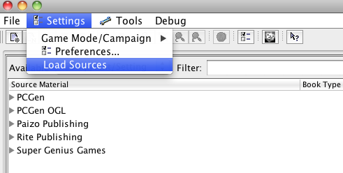
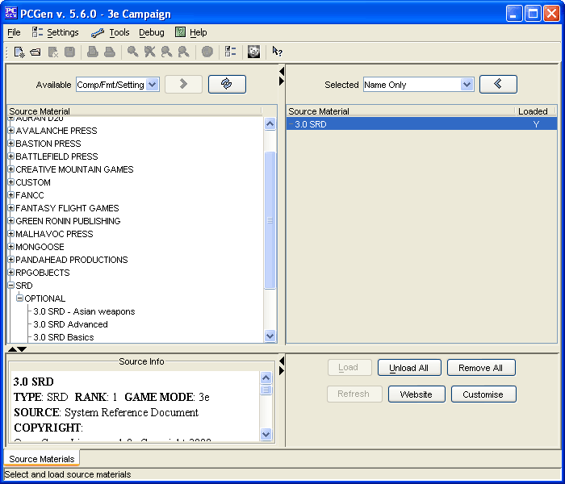
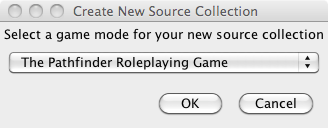
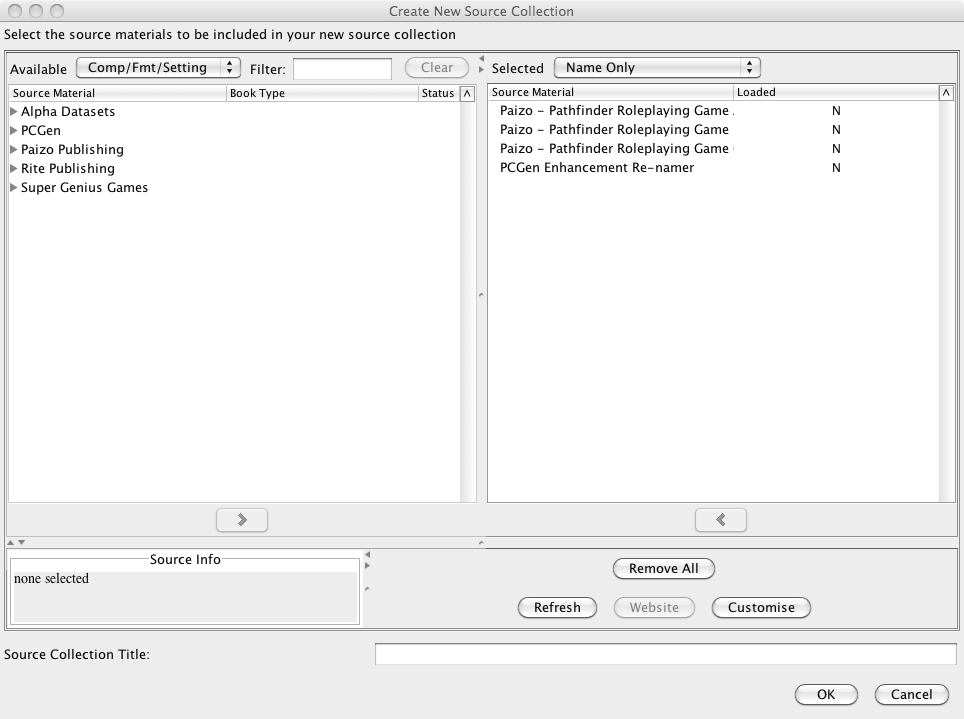

Loading Campaign Materials: Basic Mode
This page is broken into three sections:
Basic Source
Loading
Loading Additional
Sources
Creating New Source
Collections
-
PCGen is configured to launch the "Load Sources" window when
launched for the first time after a clean install.

If the window does not pop-up upon launching of PCGen you can
call it up by selecting the "Load Sources" item on the "Settings"
menu. This can be found under the
Settings-Load
Sources
menu.

-
To load one of the standard configurations, listed below, simply
select the set desired and then click the
LOAD
button near the lower-right of the window. PCGen will then switch
to the appropriate GameMode and will load the sets contained in the
selected configuration file.
As of PCGen 5.17.x, the Standard Configurations provided as part
of the basic mode of source loading include the following sets:
-
You may now create your new character.
Once a standard configuration has been loaded you can add other
source files from the same
GameMode
. The following
are the steps to followed:
-
Follow the instructions contained in
Step 4
on
the
Loading Campaign
Materials: Advanced Mode
page to find and add additional
sources to be loaded.
-
Once all desired additional sources have been added, ckick on
the "Unload All" button.

-
Click on the "Load" button.
-
You may now create your new character.
The source collections made available as part of the basic
source loading mode are a small fraction, albeit popular, subset of
the data sets available within PCGen and chances are that you will
eventually want to add a few of these additional sets to your
loaded sets. The previous section covers how to add the additional
data sets but if you add enough additional sets on a regular basis
you are likely to want a new short-cut to load all of those files.
PCGen has the ability to create this short-cut for you and make it
available as part of the basic source loading window.
Following the steps listed below will help you in the creation
of a customized "Source Collection":
-
Open the "Load Sources" window and click on the "Add"
button.
-
On the "Create New Source Collection" window you will need to
select, with the pull-down menu, the
GameMode
with
which you will be working. Click "Ok".

-
Move the data sets you wish to load from the left "Available
Source Material" pane, to the right "Selected Source Material"
pane. This is done similarly to the way data sets are loaded under
the
Advanced
Mode
.

-
Enter a "Source Collection Title" in the field at the bottom of
the window and click "ok".
Congratulations!
You have now successfully
created a custom Source Collection.